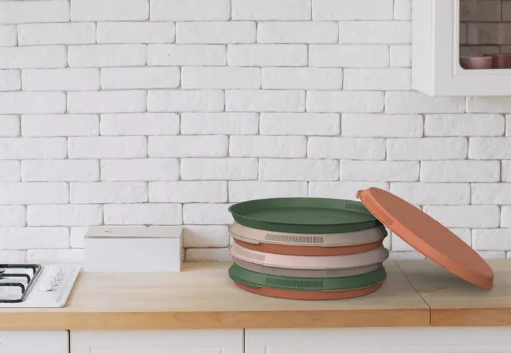

Bitácora
Esta bitacora ha sido lograda en 5 semanas de mucha investigación y aprendizaje, así que tendras las respuestas claves para ir por tu sitio web.
Introducción al proyecto innovador

Existen 3 Tipos:
1.Tecnológico: Son proyectos que se basan en la creación, modificación y adaptación de un producto o servicio tecnológico. Por ejemplo, una tienda de conveniencia ambulante y sin empleados, el Wheelys 247. 2.Educativo: Son proyectos que tienen como objetivos establecer nuevos métodos de enseñanza a travez de prácticas pedagocias, gestión institucional y admninistrativa. Por ejemplo, El programa KiVA International, desarrollado por la Universidad de Turku de Finlandia, es un innovador método de prevención y acción frente al bullying que ha logrado reducir en un 90% en aquellos centros en los que ha sido implantado.
2.Educativo: Son proyectos que tienen como objetivos establecer nuevos métodos de enseñanza a travez de prácticas pedagocias, gestión institucional y admninistrativa. Por ejemplo, El programa KiVA International, desarrollado por la Universidad de Turku de Finlandia, es un innovador método de prevención y acción frente al bullying que ha logrado reducir en un 90% en aquellos centros en los que ha sido implantado.

3.Ecológico: Son proyectos orientados al cuidado y preservación de la naturaleza mediante practicas responsables sobre el uso y conservación de los recursos naturales y del entorno. Por ejemplo, Pizzcycle, es una caja de pizza que puede lavarse y reutilizarse. Con una particular forma circular, estos empaques están hechos de bioplástico y contienen, además, unas rejillas que permiten que el vapor de la pizza escape para mantenerla siempre crujiente, esponjosa y calientita.
Gestión del proyecto, mi bitácora digital
Bitácora digital
| Tipo | Descripción |
|---|---|
| Bitácora | Cuaderno o publicación que permite llevar un registro de diversas acciones en un orden cronológico Se puede aplicar en blogs, web, redes sociales o contenido audiovisual. |
| Reportes de avance de clases | Informe académico que recoje los resultados de una investigación y logre comunicar conclusiones. |
| Documentación | Hay de dos Tipos, los textuales, que son en papel y los no textuales, los cuales tienes otro tipo de soporte como una grabación, pendrive, video u otro. |
| Notas de clase | Resumen de temas desarrollados en clase, el cual sirve como guia de estudio y se complementa con libros. |
Terminos a considerar
Obstáculos: Implica toda dificultas en el cumplimiento del propósito
Comentarios:Es la apreciación o escrito sobre cualquier cosa puesta en análisis
Conclusiones:Sintetiza brevemente los puntos relevantes, sin redundar ni ingresar nueva información.
Interfaces y lenguajes de programación para diseño web
Sitio Web
Espacio digital en internet contruido por diversos documentos que contienen texto, videos, fotos, etc.Es decir, es un conjunto de páginas web. Este sitio web necesita un alojamiento llamado hosting y se relaciona a un dominio, los cuales le permitiran ser visibles.
Dominio
Es la dirección y nombre del sitio web, por ejemplo: www.youtube.com.
Hosting o Alojamiento
Espacio físico donde se almacena tu sitio web puede ser una computadora o un servidor que se contrata en una empresa de alojamiento. Algunos ejemplos son HostGator, BlueHost o Webempresa.
HTML
Lenguaje de arcado que usamos para estructurar y dar significado a nuestro contenido web. Por ejemplo, Definir parrafos, tablas de datos y inscrustar videos.
CSS
Lenguaje de reglas de estilo que usamos para aplicar estilo a nuestro contenido HTML. Por ejemplo, establecer colores, fuentes, diseñar nuestro contenido en varias columnas..
JAVA SCRIPT
Lenguaje de secuencias de comandos que le permite crear contenido de ac tualizacion dinámica como animar imagenes.
Interfaces y lenguajes de programación para diseño Web: Google Site
Google Sites: Es una aplicación onlinede google que permite la creación de sitios webs de una manera rápida y sencilla. Este editor web permite mostrar distinta información desde un mismo lugar como videos, calendario, archivos adjuntos, texto y otro, incluso cuenta con una variedad de plantillas editables.
¿Cómo abrir Google site?
- Abrir Google drive.
- Hacer clic en +, Nuevo.
- Hacer clic en más y seleccionar sitios de google.
- Empezamos a diseñar (Título de página).
- Verificar alineación y tamaño de texto.
Estructura de la Página web
- Documentación
-
Proviene de errores y asegura el correcto uso de la plataforma en el futuro.
- Estructura de archivos
-
Organización de carpetas que contienen los archivos front end y back end. Usualmente se clasifican según su extensión. Por ejemplo, .html, .css o .js.
- Atributos personalizados
-
Se consideran para imagenes, enlaces, Listas ordenadas y no ordenadas, formato de texto, etiquetas, entro otros.